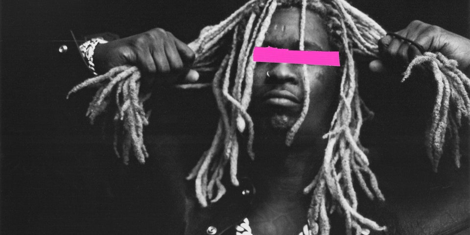

By Vince Szarka / 1Hr ago
Young Thug via Spotify/YSL
Just one day after releasing his newest album Punk, Young Thug gets invited to perform "Tick Tock" and "Love You More" on Satuday Night Live. Joined by Travis Barker on the drums for both songs plus Nate Ruess and Gunna for the last track. It marked Young Thug's first solo performance as a SNL musical guest. This week's host was the Oscar winning actor Rami Malek who was also obviously excited about Thug's performance. Watch as Young Thug takes the stage with his band and their pink clothes on. Oh, and don't forget to watch the hilarious skits Rami starred in.
Young Thug announced Punk back in July during one of his performances. He dropped the single "Tick Tock" from the project in August. It's safe to say that Young Thug had an amazing year in terms of releases. After his Slime Language 2 compilation in April he appeared on several other big-name projects. Including Drake's chart topping album Certified Lover Boy. He is also on the song Way 2 Sexy which spent 2 weeks at #1 in the Billboard Hot 100 currently in #4. We could also hear him on Kanye West's Donda on the track "Remote Control".
Will Young Thug be able to replace Certified Lover Boy from the top of the charts with his new album? Or will Drake the Billboard called "Artist of the Decade" keep the throne? Let us know what you think!
2021 - sound Magazine - Vince Szarka